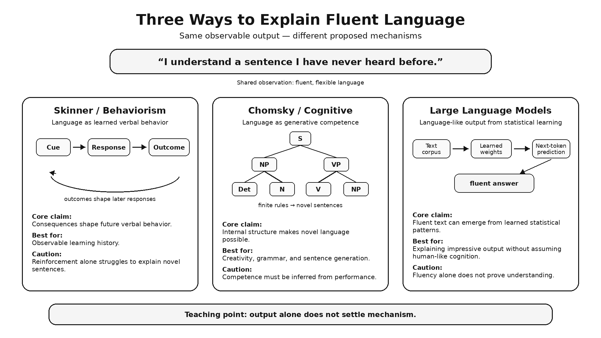

History and Approaches to Psychology
"Psychology is basically common sense dressed up in fancy language."
You have probably heard this. You may have thought it yourself when you signed up for this course. It is an understandable position — you have been observing human behavior your entire life, you have reasonably good intuitions about people, and when you read about psychological findings they often seem obvious. Of course people work harder when they feel their work matters. Of course we remember emotionally charged events better than boring ones. Of course first impressions stick. Everybody knows these things.
Here is the problem: expert intuition can fail too. Before Stanley Milgram ran his famous study on obedience to authority, a panel of 39 psychiatrists predicted that only about one person in a thousand would go all the way to the maximum, most severe shock level (Milgram, 1974). In the condition Milgram first published, the actual number was 26 of 40 — about two in three (Milgram, 1963). We return to this study in Chapter 11. And when people see findings that contradict their intuitions, they often remember the finding as what they expected all along. This is called the hindsight bias — the feeling, after the fact, that you knew it all along. Every result looks obvious once you know it. That is not the same as knowing it.
The science of psychology exists precisely because common sense about human behavior is unreliable. We return to this throughout the course. For now: if the ideas in this chapter feel obvious, treat that feeling as data, not as proof.
Where This Fits
This chapter is the epistemological (that is, how scientists decide what is true) foundation for everything that follows. Before we can talk about how memory works, how conditioning shapes behavior, or why social influence is so powerful, we need to understand what kind of enterprise psychology is — what questions it asks, how it asks them, and why that matters. This chapter also tells the story of how those questions accumulated, competed, and changed over time: from Victorian-era introspection labs to modern neuroscience and evolutionary biology. When you know where the field came from, the perspectives that dominate it today stop looking like arbitrary choices and start looking like what they are — the scar tissue from a century of productive arguments.
Learning Objectives
- Define psychology as the scientific study of behavior and mental processes, and describe the breadth of the field beyond common stereotypes.
- Identify the major historical schools of thought in psychology, the question each was trying to answer, and how later approaches responded to unresolved problems while the traditions overlapped.
- Describe the modern theoretical perspectives in psychology and distinguish a useful question from an evidence-supported causal explanation.
- Apply the biopsychosocial model to organize contributors to a specific behavior or mental state, and explain why the model is not a completed causal account.
- Explain what the evolutionary perspective adds to psychological explanation, and where that kind of explanation needs to be handled with caution.
- Explain how psychological science relies on empirical evidence and revises conclusions as evidence changes, using hindsight bias, confirmation bias, replication, and self-correction.
Section 1: What Is Psychology (And What Isn't It)?
Beyond Mind Reading and Therapy
The question usually comes at a dinner party or on an airplane. You tell someone what you study, and they get a look — somewhere between intrigue and mild suspicion — and say: "Oh, so you can tell what I'm thinking right now?"
The honest answer is no. The more useful answer is that if you could, it would not make you a psychologist — it would make you a mentalist, which is a job category that requires neither a research degree nor peer review. Psychology is the scientific study of behavior and mental processes. That definition is short but it carries weight.
Behavior Is Evidence About Mental Process
"Behavior" means anything an organism does that is observable and measurable — talking, running, eating, avoiding, crying, sleeping. "Mental processes" means the internal events that drive behavior: perceiving, thinking, remembering, deciding, feeling, wanting. The discipline studies both because you cannot fully understand either without the other. Mental processes cannot be observed directly — they are inferred from behavior, self-report, physiology, and neural activity. A single behavior may be consistent with several different internal processes; psychology uses evidence to distinguish among them. Psychology needs both.
Notice what that definition does not say. It does not say "treatment of mental illness." It does not say "analysis of dreams and childhood." It does not say "helping people feel better." Some psychologists do those things. Most do not. The field spans basic research (how does attention work?), applied science (how do we design cockpits so pilots do not miss critical warnings?), clinical and counseling work, educational practice, forensic consultation, sports performance, health behavior, human factors engineering, and organizational behavior. The stereotype of the therapist on the couch is one corner of an enormous territory.
A concrete example of the behavior/mental-process distinction: you flinch at a sudden loud sound before you consciously register what made it. The flinch is the behavior — observable, measurable, something a camera could record. The split-second appraisal that decided "that sound is worth reacting to" is the mental process — unobservable directly, but inferable from the behavior it produced. Psychology studies both ends of that chain, and a lot of the interesting work happens in figuring out how they connect.
What Makes the Study Scientific
"Scientific" is doing a lot of work in "scientific study of behavior and mental processes." Science is distinguished less by what it studies than by how it tests explanations — through systematic observation, testable hypotheses, data collected through controlled procedures, and conclusions revised when evidence demands it. Psychology adopted that method. That is the claim, and the rest of this chapter is the story of how it happened and what it cost.
Before reading on — in your own words, what is the difference between a "behavior" and a "mental process" in psychology? Give an example of each that is not from this chapter.
What did you think psychologists did before reading this? How close was your prior image to the actual scope of the field? Where did that image come from?
![A student is studying when a phone notification appears. Six boxes surround the scene: Biological (what brain and body systems redirect attention?), Cognitive (why does the notification interrupt working memory?), Learning (how has past experience trained this response?), Social (how do peers, norms, and expectations shape this behavior?), Developmental and Individual Differences (why are some people more distractible than others?), and Clinical and Applied (when does this behavior become impairing, and what might help?).](../images/ch01/fig_1_1_scope_map.png)
Section 2: A Short History, Organized by Problems
Competing Questions, Overlapping Traditions
My own academic background is in animal behavioral ecology and developmental psychology — fields built on asking why a behavior exists, not just how it works. That habit of mind shows up throughout this course, especially once we reach the biological basis of behavior in Chapter 3. For now, here is the short version of a much older argument: a set of long-running disagreements about what the right question for psychology even is.
This is not a neat timeline in which one school defeated another. These traditions overlapped, competed, and sometimes ignored one another. Later approaches responded to unresolved problems without simply replacing what came before. The table below organizes them by the problems they emphasized, not by a simple march of progress.

1832–1920

1842–1910

1878–1958

1856–1939

1904–1990
| School | Core question | Contribution | Limitation |
|---|---|---|---|
| Wundt's experimental psychology and Titchener's structuralism (1879; 1898) | How can conscious experience be studied experimentally, and what are its elements? | Wundt established an experimental laboratory and used trained introspection within a broader framework often called voluntarism; Titchener developed structuralism more specifically | Introspective reports were unreliable across observers, and a catalog of elements could not capture the full range of mental life |
| Functionalism (James, 1890) | What is the mind for? | Connected mind to adaptation and function | Less unified as a laboratory program than behaviorism; harder to reduce to a single method |
| Behaviorism (Watson, 1913; Skinner, 1945, 1957) | How can behavior be explained through relations among environment, action, and consequence? | Rigorous, replicable principles of learning and conditioning | Early behaviorist accounts struggled with language and other generative cognition; Chomsky's critique exposed the gap without showing that learning was irrelevant |
| Psychoanalysis (Freud) | What is hidden from awareness? | Drew attention to unconscious motivation and early experience | Claims were structured so that no outcome could disconfirm them — weak falsifiability (Popper, 1959) |
| Humanistic psychology (Maslow, 1943; Rogers, 1951) | What makes human life meaningful? | Restored agency, growth, and subjective experience as legitimate objects of study | Weaker research base than behavioral or cognitive approaches |
| Cognitive (Miller, 1956, and others) | How does the mind process information? | Rebuilt attention, memory, and language as legitimate scientific objects | Risk of over-relying on the computer as a model — minds are not always computer-like |
| Biological (ongoing) | What physical mechanisms produce this? | Connected mind to brain, genetics, and physiology | Risk of reductionism — explaining a mechanism does not by itself explain why it exists |
| Evolutionary (ongoing) | Why do these mechanisms exist — what adaptive problem did they solve? | Connected present-day mechanisms to natural selection and evolutionary history | Risk of generating untestable "just-so" stories about why a trait evolved (Gould & Lewontin, 1979) |
Watson and Skinner Did Not Mean the Same Thing
The behaviorism row is probably the one you have already watched in action: every time someone trains a dog to sit for a treat, or you notice your own stomach drop at a notification sound that has come to mean "bad news," you are watching conditioning at work. You can analyze the relation among cue, action, and consequence without first deciding what the dog or you are "thinking." We cover the full mechanics in Chapter 7.
Watson and Skinner did not make exactly the same claim about inner life. Watson's methodological behaviorism restricted psychology to publicly observable behavior. Skinner's radical behaviorism treated private events — thinking, feeling, imagining — as behavior too, while insisting that naming an inner event does not explain it. Explanation still had to be grounded in environmental histories and functional relations (Skinner, 1945).
Humanistic Psychology and the Therapeutic Alliance
Humanistic psychology earns its place in the table as a reaction against behaviorism and psychoanalysis. By the mid-twentieth century, Abraham Maslow and Carl Rogers argued that both traditions were missing something: human agency, growth, and the experience of being a person rather than a stimulus-response machine or a bundle of unconscious conflict. Its research base is thinner relative to the behavioral and cognitive traditions, but its emphasis on the therapeutic relationship has a durable modern bridge. Across therapy orientations, a strong therapeutic alliance reliably predicts better outcomes and remains an important common factor; a large meta-analysis spanning 295 studies and more than 30,000 patients found a modest association (Flückiger et al., 2018). That association does not prove that alliance is the most important cause or a mechanism independent of technique. Patients who are already improving may rate the relationship more positively too, so some of the association likely runs in both directions.
Language, Mechanism, and Evolutionary Questions
The pressure that behaviorism placed on cognitive questions is worth a closer look, because the debate shows up again later in unexpected company. In 1957, Skinner argued in Verbal Behavior that language could be explained through learned verbal behavior shaped by its consequences. In 1959, the linguist Noam Chomsky argued that this account did not explain how children so rapidly produce and understand sentences they have never heard before. Chomsky's critique became one important pressure toward cognitive explanation; it was not a single handoff that ended behaviorism, and it did not show that reinforcement contributes nothing to language. Their disagreement was fundamentally about mechanism: what kind of internal system can generate language? A different but related version of that problem appears when we judge machines by what they produce.
Choose one row. What question did that school make easier to study, and what did its preferred methods leave out?
In 1950, Alan Turing proposed evaluating machine intelligence through observable performance: could a machine sustain a conversation that a human judge could not reliably distinguish from a person's? That was not the same dispute Skinner and Chomsky were having, but the questions intersect. Both force us to ask what successful language behavior can tell us about the process that produced it.
A language model can generate a convincing answer. It can even produce the sentence "I am conscious." That fluent self-report is observable output, not evidence of subjective consciousness. Developers know the model's architecture, training process, and mathematics; what remains incomplete is the causal explanation for why those operations produced a particular response (Anthropic, 2023). Psychologists face the same problem when studying people: thoughts, intentions, and other mental processes must be inferred from behavior and converging evidence.
Performance tells us what a system can do. By itself, it does not tell us how the system did it — or whether its internal processes resemble ours.
{kind=link}

Why can fluent output alone not identify the internal process that produced it? Name two kinds of converging evidence you would want before making a claim about mechanism.
The biological and evolutionary rows are the ones we return to most often in this course — carefully. Chapter 3 covers the mechanisms in depth. One framing you will hear constantly, in this course and outside it, is nature versus nurture: are we shaped more by genes or by environment? Treat that framing as a starting question, not an answer. Most traits studied in psychology reflect development within environments, often including genetic differences; genes and environments are not competing causes, and their effects unfold through ongoing transactions. Chapter 10 covers that process in depth. The working rule for the rest of this book: it is always fair to ask what a mechanism might be for, but any specific story about why it evolved needs to clear the same evidentiary bar as any other scientific claim. Evolutionary hypotheses are tested by deriving predictions that can be examined using comparative, developmental, cross-cultural, genetic, and ecological evidence. A plausible story is only the beginning.
Section 3: Modern Perspectives — Seven Lenses, No Single Truth
Perspectives Frame Questions; Evidence Weights Answers
The historical schools are still alive, though they have changed shape. Today's psychology offers multiple theoretical perspectives — ways of framing questions and proposing explanations — and most working psychologists draw on several rather than committing to one. A perspective can make a question visible without making every answer from that perspective equally well supported. Evidence still decides among competing claims.
| Perspective | Main question |
|---|---|
| Biological | What physical mechanisms are involved? |
| Behavioral | What learning history shaped this behavior? |
| Cognitive | What thoughts, beliefs, memories, or interpretations matter? |
| Psychodynamic | What unconscious conflicts or early experiences may matter? |
| Humanistic | What goals, meanings, or growth needs are involved? |
| Sociocultural | What social norms, roles, institutions, or cultural expectations matter? |
| Evolutionary | What adaptive problem might this mechanism have helped solve? |
A few of these are worth one more sentence. The biological perspective gets a full chapter of its own — Chapter 3 is entirely about this level of analysis. Behavioral approaches have produced some of clinical psychology's clearest treatment tools, especially exposure-based treatments for anxiety and phobias. Other behavioral interventions, including applied behavior analysis, have a substantial evidence base but also require careful ethical discussion about goals, consent, and quality of life. The cognitive perspective is one of the most productive research perspectives in the field, though hardly the only candidate for that title. The sociocultural perspective gets its own extended treatment in Chapter 11.
One Behavior, Several Questions
No perspective is sufficient alone. Here is an everyday example: why did you check your phone three times in the last ten minutes?
- The behavioral perspective points to a reinforcement history — checking sometimes produces a rewarding notification, and unpredictable rewards are especially good at sustaining a behavior.
- The cognitive perspective points to the discomfort of an unresolved question ("did they respond?") competing for your attention until you resolve it.
- The sociocultural perspective points to a social environment that treats constant availability as normal.
- The evolutionary perspective asks why a brain would be built to find social information so hard to ignore in the first place — and points to the cost of missing socially relevant information for a species that depends on group cooperation to survive.
None of these four answers has to contradict the others. Each is answering a different question about the same five seconds of behavior, and evidence determines how much weight each answer deserves.
Depression and Unequal Evidence
A more serious example makes the weighting problem visible. Consider depression.
- The biological perspective examines genetic risk, stress physiology, sleep, inflammation, and neurotransmitter systems associated with depression — an active research area where the older, simpler "chemical imbalance" story has not held up and should not be treated as a settled, single cause (Moncrieff et al., 2023).
- The behavioral perspective notes reinforcement withdrawal and social avoidance spirals.
- The cognitive perspective examines patterns such as negative views of self, world, and future. The sociocultural perspective points to poverty, discrimination, and social isolation as risk amplifiers. These are evidence-informed levels of analysis, not a claim that every factor is present in every case.
- Historically, psychodynamic accounts emphasized loss, early attachment disruption, and internalized anger. Those ideas influenced clinical thought, but they are less strongly supported as a general causal account of depression than the risk and maintenance processes above.
The point here is to show that perspectives generate candidates; evidence assigns weight.
The Biopsychosocial Model Organizes; It Does Not Finish the Explanation
This is what the biopsychosocial model formalizes: biological, psychological, and social/environmental factors can interact to produce behavior and mental states. The model is an organizing framework for what to consider, not itself a causal explanation — a complete account still has to specify the actual mechanisms and how they interact in a given case.
Name one thing the biopsychosocial model can explain about depression that a purely biological account cannot. Name one thing a purely sociocultural account misses.
Choose a habit you have — something you do regularly without much thought. How would a behavioral psychologist explain it? How would a cognitive psychologist? How would a sociocultural psychologist? What evidence would help you decide how much weight to give each account?
Section 4: Why Science? (And Why It's Harder Than It Looks)
Intuition Rewrites the Past
We are all amateur psychologists. We have to be — predicting what other people will do is a survival requirement. The question is not whether you have theories about human behavior. You do, and some of them are good. The question is whether your informal theories can be trusted, and how you would know if they were wrong.
The answer is: mostly you cannot, without systematic data. Here is why.
Hindsight bias is the tendency, after learning an outcome, to believe you knew it all along (Fischhoff, 1975). It is nearly universal, and robust and difficult to eliminate even when you are aware of it. You have felt this watching sports: a close game ends, and suddenly everyone in the room is certain they "knew" the winner the whole time — even people who were nervous about the outcome five minutes earlier. Studies of hindsight bias do the same thing under controlled conditions: ask participants to predict the outcome of a study, show them the results, then ask them to recall what they predicted. Recalled predictions shift reliably toward the outcome they just learned. The brain rapidly incorporates new information into its causal narrative and smoothes over prior uncertainty. This is efficient for learning; it is disastrous for evaluating evidence. It means that almost any finding in psychology will feel like common sense once you know it — which tells you nothing about whether you could have predicted it.
Confirmation Protects Our Theories
Related is confirmation bias: the tendency to seek out, interpret, and remember information that confirms existing beliefs, and to discount information that challenges them (Nickerson, 1998). Selective attention makes confirming evidence easier to notice, interpretation bends ambiguous evidence toward the theory, and memory makes supporting cases easier to retrieve. The brain is not an objective theory-tester. It is a theory-preserver.
Self-Correction Takes Institutions
Science is a set of procedures designed to work around these biases: pre-registration of hypotheses before data collection, control conditions, blinded review, systematic replication, public data. None of these is magic. Science gets things wrong — sometimes spectacularly, sometimes for extended periods. Psychology has faced a genuine reckoning with this over the past decade: beginning around 2011, researchers began systematically attempting to replicate published findings and discovered that a substantial number did not hold up — the replication crisis (Open Science Collaboration, 2015).
The replication crisis is not a reason to dismiss psychology. It revealed serious weaknesses in research incentives, statistical practices, publication systems, and evidential standards — the failures were real, and in some subfields substantial. Biased inference does not require deliberate fraud or conscious misconduct: expectations can shape what researchers notice and how they interpret ambiguous evidence without anyone deciding to do bad science, a problem we revisit with Clever Hans in Chapter 2. Organized replication, transparency, and statistical criticism can expose those weaknesses: bad findings get caught more often than bad intuitions do, not because psychologists are exceptionally honest, but because the field has built mechanisms that do not depend on anyone being exceptionally honest. Self-correction is possible, not automatic — it took deliberate reform, not a guarantee built into doing science. Chapter 2 covers research methods in full. For now, the point is simple: common sense about human behavior is unreliable, systematic observation is better, and even systematic observation needs institutional checks to stay honest.
Think of a belief you hold about human nature — something you take for granted about why people do what they do. What would it take to convince you that you are wrong? If your answer is "I cannot imagine evidence that would change my mind," that is worth noticing.
Chapter Summary
Psychology is the scientific study of behavior and mental processes — a definition that is broader than most students expect. The field spans basic research, applied science, clinical practice, education, organizational work, and more; the stereotype of the therapist on a couch is one corner of a much larger territory.
The history of psychology is best understood as overlapping arguments about what the right question is. Wundt established an experimental laboratory and worked within a broader framework often called voluntarism; Titchener developed structuralism more specifically. James shifted the question from structure to function. Watson restricted psychology to publicly observable behavior, while Skinner also treated private events as behavior and grounded explanation in environmental histories and functional relations. Freud emphasized unconscious processes; humanistic psychologists restored agency, growth, and subjective experience; cognitive approaches made internal information processing experimentally tractable; and biological and evolutionary approaches reconnected mind to brain, body, and natural history.
Modern psychology operates from multiple theoretical perspectives, not a single framework. The biological, psychodynamic, behavioral, humanistic, cognitive, sociocultural, and evolutionary perspectives frame different questions about behavior and mental life, but a possible explanation is not automatically a supported one. Evidence determines how much weight each account deserves. The biopsychosocial model organizes biological factors, psychological processes, and social/environmental context; it is not a completed causal explanation until the mechanisms and their interactions are specified.
Psychology exists as a science because common sense about human behavior is unreliable. Hindsight bias makes every finding look obvious after the fact. Confirmation bias protects informal theories from disconfirmation. Systematic observation, controlled methods, and institutional accountability through replication and peer review are not perfect — the replication crisis revealed real and sometimes substantial weaknesses in research practice. Self-correction is possible, not automatic: the problems in the field were identified and addressed through the scientific process itself, not through anyone being exceptionally honest.
Connections
| Concept from this chapter | Reappears in | Why it matters there |
|---|---|---|
| Behaviorism / operant conditioning | Ch. 7 — Learning | Chapter 7 covers the mechanics of classical and operant conditioning; the brief historical framing here becomes a working account of learning |
| Cognitive approaches | Ch. 8 — Memory and Ch. 9 — Thinking, Language & Intelligence | The information-processing questions introduced here become full accounts of attention, memory, language, and reasoning |
| Evolutionary / behavioral-ecology framing | Ch. 3 — Neuroscience & Biological Bases | Chapter 3 develops mechanism in depth; later chapters return to the distinct function question: what problem might this mechanism help solve? |
| Nature vs. nurture | Ch. 10 — Lifespan Development | Development shows why genes and environments are not rival causes and how their effects unfold together over time |
| Unconscious processes / psychoanalysis | Ch. 5 — Consciousness | Modern research studies unconscious processing with methods that go well beyond Freud while preserving the question of what occurs outside awareness |
| Biopsychosocial model | Ch. 13 — Psychological Disorders & Therapy | The model organizes biological, psychological, and social contributors to vulnerability, maintenance, and treatment planning; diagnosis classifies patterns and does not itself specify cause |
| Hindsight bias / confirmation bias | Ch. 2 — Research Methods & Statistics | These biases are part of the motivating problem for scientific methods; Chapter 2 covers the safeguards in detail |
| Milgram's psychiatrist-prediction failure | Ch. 11 — Social Psychology | The misconception opener's example is the same study Chapter 11 covers in full — obedience to authority and why expert intuition badly underestimated it |
Review Questions
1. Psychology is best defined as:
Show answer & rationale
Answer: b. Why the others are tempting: (a) is the most common misconception — most people picture psychology as exclusively clinical, when most psychologists do not treat mental illness at all; (c) describes a medical specialty, not psychology; (d) describes philosophy of mind, a related but separate discipline. Psychology touches all of these domains but is not defined by any one of them.
2. Which statement correctly distinguishes Wundt from Titchener?
Show answer & rationale
Answer: b. Why the others are tempting: (a) reverses the distinction that many brief histories blur; (c) is wrong because both used trained introspective methods, though not identically; (d) describes the later contrast between behaviorism and approaches that studied mental processes.
3. A dog learns to sit reliably whenever it hears the word "sit" because sitting is consistently followed by a treat. Which historical approach most directly analyzes this learning without making a claim about the dog's inner experience necessary?
Show answer & rationale
Answer: c. Why (b) is tempting: psychoanalysis does focus on internal states, but unconscious conflict is not needed to analyze this learned relation. Behaviorism examines how cues, actions, and consequences function together. Watson restricted psychology to publicly observable behavior; Skinner also treated private events as behavior, but neither requires an inferred thought to begin analyzing the dog/treat contingency.
4. Functionalism, as developed by William James, differed from structuralism in that functionalism:
Show answer & rationale
Answer: b. Why (d) is tempting: limiting psychology to publicly observable behavior is Watson's methodological behaviorism, a different program. Functionalism still engaged with conscious experience — it just asked a different question about it.
5. Which conclusion best fits the chapter's account of the Skinner–Chomsky language debate?
Show answer & rationale
Answer: c. Why the others are tempting: (a) turns an overlapping intellectual history into a relay race; (b) overstates what the critique established; (d) reverses the chapter's central inference problem. The debate mattered because novel language raised a mechanism question that early behaviorist accounts had not resolved.
6. A student lists genetic risk, disrupted sleep, negative expectations, and social isolation in a case of depression, then says, "The biopsychosocial model has explained what caused this person's depression." What is the best evaluation?
Show answer & rationale
Answer: c. Why the others are tempting: (a) mistakes a useful checklist for a mechanism; (b) mistakes one level of analysis for the only real one; (d) confuses causal organization with diagnosis. The model tells you where to look, not what the completed explanation must be.
7. A researcher learns the outcome of a study and immediately feels that the result was obvious. Which safeguard most directly preserves what the researcher predicted before knowing the outcome?
Show answer & rationale
Answer: a. Why the others are tempting: (b) seems reasonable but leaves memory open to hindsight bias; (c) can produce a good post-hoc explanation without showing that the outcome was predicted; (d) is confirmation bias in action. Preregistration creates a record that outcome knowledge cannot quietly rewrite.
8. Freud's psychoanalysis was influential but scientifically problematic primarily because:
Show answer & rationale
Answer: c. Why (d) is tempting: Freud did not use laboratory methods at all — he used the consulting room. The problem was not replication failure; it was that the framework was not structured to permit disconfirmation in the first place.
9. A researcher studying how cultural norms shape what counts as "normal" grieving behavior is working primarily from which perspective?
Show answer & rationale
Answer: d. Why (b) is tempting: behavioral researchers study behavior, and grief involves behavior. But the sociocultural perspective specifically examines how norms, cultural frameworks, and social context define and shape psychological experience — which is what "what counts as normal" is asking.
10. The evolutionary perspective in psychology asks primarily:
Show answer & rationale
Answer: b. Why (d) is tempting: comparative research across species often informs evolutionary explanations, so the two get blurred. But the evolutionary perspective's defining question is why a mechanism exists — its adaptive function — not just what differences are present across species.
11. A meta-analysis finds that a stronger therapeutic alliance reliably predicts better outcomes across therapy orientations. Which conclusion is warranted?
Show answer & rationale
Answer: a. Why the others are tempting: (b) mistakes evidence for a common factor as evidence that technique is irrelevant; (c) turns prediction into proof of a uniquely causal mechanism and ignores possible bidirectionality; (d) confuses a claim's historical origin with the quality of modern evidence. The reliable association supports the importance of alliance without settling every causal pathway.
Key Terms
- Behavior
- Anything an organism does that is observable and measurable; studied alongside mental processes because neither fully explains an organism's actions without the other.
- Behaviorism
- A family of approaches that explains behavior through environmental histories and functional relations; Watson restricted psychology to publicly observable behavior, while Skinner also treated private events such as thinking and feeling as behavior.
- Biopsychosocial model
- An organizing framework for biological, psychological, and social/environmental contributors to behavior and mental processes; it is not a completed causal explanation until mechanisms and interactions are specified.
- Cognitive psychology
- The study of internal mental processes including attention, memory, language, reasoning, and problem-solving; made those processes experimentally tractable while behaviorist research continued.
- Confirmation bias
- The tendency to seek, interpret, and remember information in ways that confirm preexisting beliefs, and to discount contradicting evidence.
- Evolutionary perspective
- A theoretical lens that asks what adaptive problem a psychological mechanism may have helped solve and evaluates proposed functions with comparative, developmental, cross-cultural, genetic, and ecological evidence.
- Falsifiability
- The property of a scientific claim that makes it testable — that is, capable of being shown wrong by some possible observation. Claims that cannot be falsified are outside the scope of science.
- Functionalism
- The early school associated with William James that asked what the mind does and why, rather than what it is made of; strongly influenced by Darwinian theory.
- Hindsight bias
- The tendency, after learning an outcome, to believe one had predicted or known it all along; makes psychological findings seem "obvious" when they are not.
- Humanistic psychology
- The mid-twentieth-century movement, associated with Maslow and Rogers, that emphasized human agency, subjective experience, and growth potential as essential objects of psychological study.
- Introspection
- The use of trained observers to report aspects of conscious experience; Wundt used controlled introspective methods within a broader experimental program, and Titchener made them central to structuralism, but reports proved unreliable across observers.
- Mental process
- An internal event — perceiving, thinking, remembering, deciding, feeling — that drives behavior but cannot be observed directly; inferred from behavior, self-report, physiology, and neural activity.
- Psychoanalysis
- The theoretical and clinical system developed by Freud, emphasizing unconscious processes, early experience, and intrapsychic conflict as determinants of behavior; scientifically limited by lack of falsifiability.
- Psychology
- The scientific study of behavior and mental processes; broader than the popular association with therapy and mental illness, spanning basic research, applied science, and clinical practice alike.
- Replication crisis
- The reproducibility problem exposed by systematic replication efforts beginning around 2011, which found that many sampled published findings did not hold up and prompted reforms in methodology and publication practice.
- Structuralism
- The program, most directly associated with Edward Titchener (a student of Wundt), to identify the basic elements of conscious experience through trained introspection. Grew out of Wundt's founding of experimental psychology but diverged from Wundt's own framework, which historians usually call voluntarism.
- Therapeutic alliance
- The working relationship between therapist and client; a stronger alliance reliably predicts better therapy outcomes across orientations, although that association alone does not establish a uniquely causal mechanism.
Further Reading
American Psychological Association — What is psychology?
https://www.apa.org/education-career/guide/subfields/what-is-psychology
Brief, authoritative overview of the field's scope and the range of careers psychologists pursue.
Noba Project — History of Psychology (Baker & Sperry)
https://nobaproject.com/modules/history-of-psychology
Peer-reviewed, open-access chapter; more depth on each major school than this chapter provides, with primary source references.
Watson, J. B. (1913). Psychology as the Behaviorist Views It.
Psychological Review, 20, 158–177.
The manifesto itself — short, readable, and genuinely worth reading. You can see the argument Watson was making and why it was persuasive, even where it goes too far.
Open Science Collaboration. (2015). Estimating the reproducibility of psychological science.
Science, 349(6251), aac4716.
The paper that launched the modern conversation about replication in psychology. The abstract and introduction are accessible without a statistics background.
References
Full citations for factual claims made in this chapter, for instructors or students who want to verify or go deeper. Distinct from Further Reading above, which is curated for student exploration rather than completeness.
Anthropic. (2023). Decomposing language models into understandable components. https://www.anthropic.com/research/decomposing-language-models-into-understandable-components
Chomsky, N. (1959). Review of Verbal Behavior, by B. F. Skinner. Language, 35(1), 26–58.
Fischhoff, B. (1975). Hindsight ≠ foresight: The effect of outcome knowledge on judgment under uncertainty. Journal of Experimental Psychology: Human Perception and Performance, 1(3), 288–299.
Flückiger, C., Del Re, A. C., Wampold, B. E., & Horvath, A. O. (2018). The alliance in adult psychotherapy: A meta-analytic synthesis. Psychotherapy, 55(4), 316–340.
Gould, S. J., & Lewontin, R. C. (1979). The spandrels of San Marco and the Panglossian paradigm: A critique of the adaptationist programme. Proceedings of the Royal Society B, 205(1161), 581–598.
James, W. (1890). The principles of psychology. Henry Holt.
Maslow, A. H. (1943). A theory of human motivation. Psychological Review, 50(4), 370–396.
Milgram, S. (1963). Behavioral study of obedience. Journal of Abnormal and Social Psychology, 67(4), 371–378.
Milgram, S. (1974). Obedience to authority: An experimental view. Harper & Row.
Miller, G. A. (1956). The magical number seven, plus or minus two: Some limits on our capacity for processing information. Psychological Review, 63(2), 81–97.
Moncrieff, J., Cooper, R. E., Stockmann, T., Amendola, S., Hengartner, M. P., & Horowitz, M. A. (2023). The serotonin theory of depression: A systematic umbrella review of the evidence. Molecular Psychiatry, 28(8), 3243–3256.
Nickerson, R. S. (1998). Confirmation bias: A ubiquitous phenomenon in many guises. Review of General Psychology, 2(2), 175–220.
Open Science Collaboration. (2015). Estimating the reproducibility of psychological science. Science, 349(6251), aac4716.
Popper, K. (1959). The logic of scientific discovery. Basic Books.
Rogers, C. R. (1951). Client-centered therapy: Its current practice, implications, and theory. Houghton Mifflin.
Skinner, B. F. (1945). The operational analysis of psychological terms. Psychological Review, 52(5), 270–277.
Skinner, B. F. (1957). Verbal behavior. Appleton-Century-Crofts.
Titchener, E. B. (1898). The postulates of a structural psychology. The Philosophical Review, 7(5), 449–465.
Turing, A. M. (1950). Computing machinery and intelligence. Mind, 59(236), 433–460.
Watson, J. B. (1913). Psychology as the behaviorist views it. Psychological Review, 20, 158–177.
Wundt, W. (1897). Outlines of psychology (C. H. Judd, Trans.). Wilhelm Engelmann.